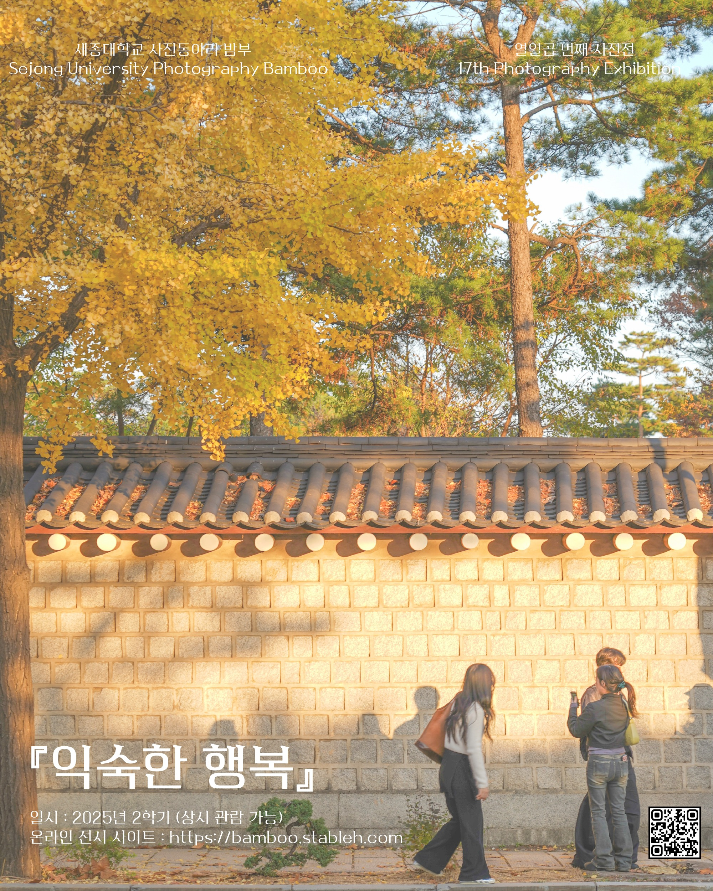

← 전시 목록으로
익숙한 행복
우리는 언제나 특별한 무언가를 찾으며 살아갑니다. 수많은 세잎클로버 사이에서 단 하나의 네잎클로버를 찾아 헤매듯, 눈앞의 ‘행운’을 좇느라 정작 우리 곁의 ‘행복’을 놓치고 있는 건 아닐까요?
이번 열일곱 번째 사진전 ‘익숙한 행복’은 그동안 익숙해서 스쳐 지나갔던 소중한 순간들을 담았습니다. 매일 오가는 등하교길, 어릴 적 놀이터, 부모님의 뒷모습, 그리고 따뜻한 집밥처럼 평범하지만 마음을 채워주는 장면들. 특별한 여행지나 화려한 풍경이 아닌, 우리 일상 속에서 피어나는 작고 따뜻한 행복을 카메라에 담았습니다.
‘익숙한 행복’이란 이름처럼, 당연하게 여겼던 순간들이 얼마나 다정한 위로가 되어주는지 이번 전시를 통해 함께 느껴보시길 바랍니다.
2025년
64 works

출품 작품
64 works
작품 기록을 불러오는 중입니다.